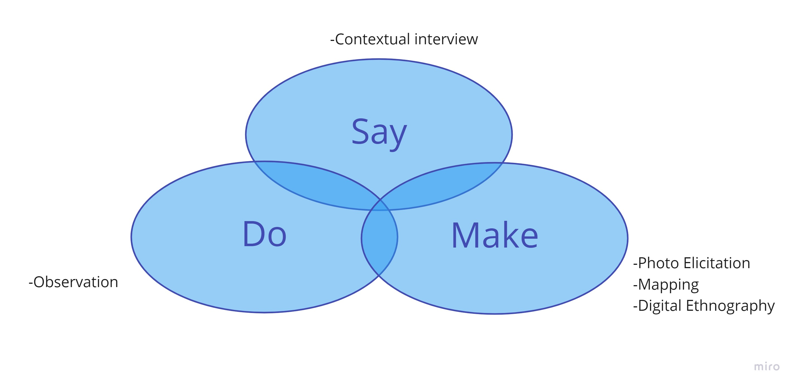
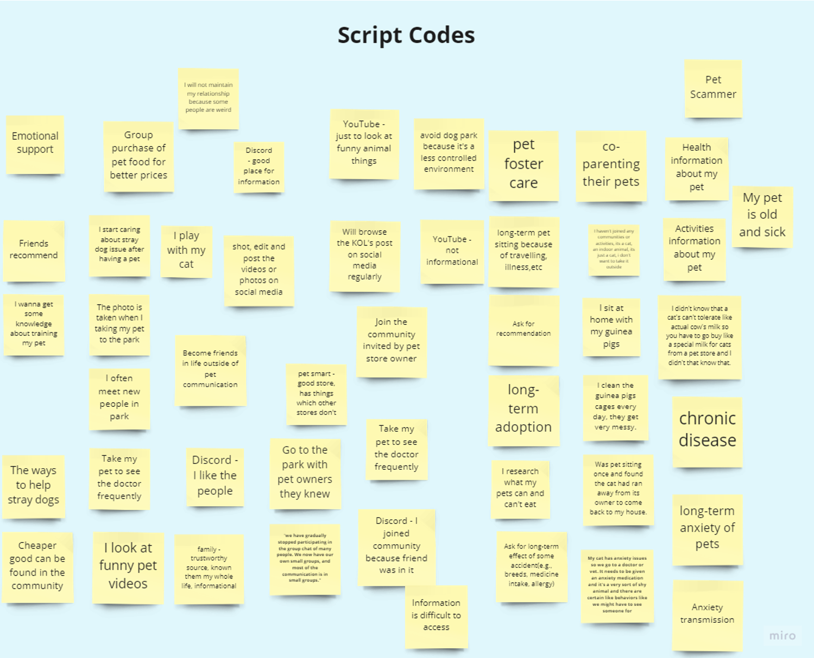
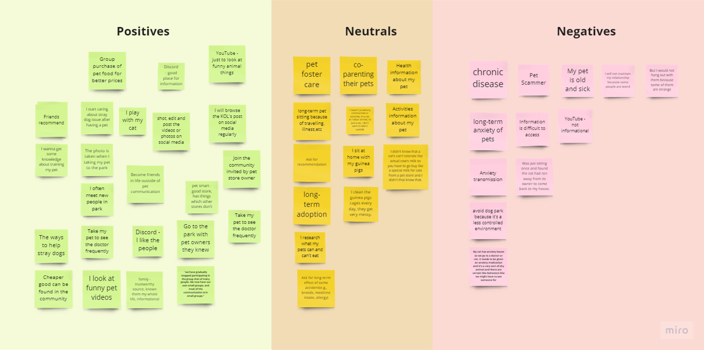
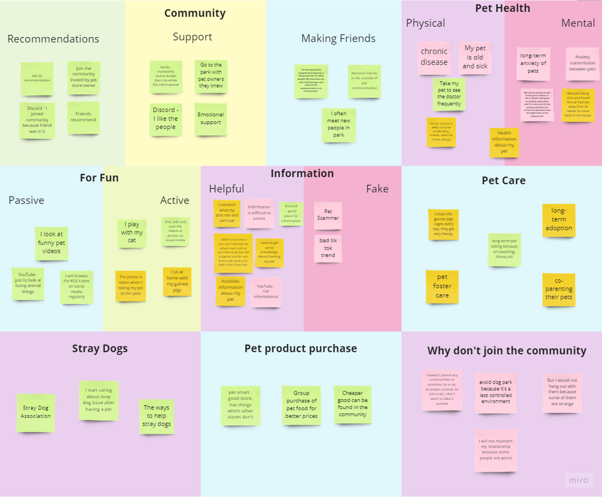

Ouah Ouah Friends
Tool used: Miro, Slack, Zotero
What I did: User Experience research
Duration: 28 July - 11 November 2022 as part of Course Advanced Human-Computer Interaction at UQ Check the project report

The background
The course requires each team to conduct an inquiry into studying a specific real-world setting, where they will apply a set of HCI theories, methods and techniques to understand people and their specific settings. The course provides three project domains based on real-world settings
In speed-dating, four of us interested in the community domain came together because of our love for
pets. The target community of our team's research fell on the pet community. We had already had some
contact with the pet community and pet owners, plus our initial background research.
Our initial
research question for the pet community was to enhance the cohesion and activity of the pet community.
After further research, the question was specified: How can pet owners be connected
to each other to
have long-term support for their pets?
Literature Review
Through a review of more than twenty relevant papers, we reveal fundamental insights into our research question from three topics:- The Sense of Community
- The Need for a Pet Community
- Improving the Attraction to a Community
Methodology
- Contextual Interview
- Photo elicitation
- Mapping
- Observation
- Digital Ethnography
We gained insight into the existing pet owner community's pain points and a deeper understanding
of what pet owners need from the community by connecting with our target users and analysing the
results.
Check the Report - Part 3. Methodology

Data Analyse
The data obtained through the survey method is qualitative. We used the Affinity diagram for the data analysis. Steps for qualitative data analysis:- Organize and Understand the data
- Code the data to find themes
- Present the data in a compelling manner



Check the Report Appendices for more data
Result & Conclusion
In this project, we aim to help pet owners be connected to have long term support for their pets. We explore the pet owners' reasons for joining the communities and participating in the relevant activities through conducting diverse HCI methods.
First, we conduct contextual interviews to explore the users'
pain points. Photo elicitation is one of the contextual interview methods. Since we find out the pet
owner is willing to share their pet story, we adopt this method to motivate them to provide insight into
the pet community.
We also use the mapping method. The mapping method makes the participants draw
their
connection as the map is down. We believe this method is suitable for researching the relationship
between the owners and the community. We also can understand the pet owners' attitudes toward each
community. Additionally, digital ethnography has also been adopted. Through this
method, we can
obtain
data about the insights that the pet owner joins the communities.
After evaluating our data, we conclude the reasons and the pain points of the pet
owners joining the
community:
- Motivation for joining the pet community
- Entertainment
- Seeking Support
- Seeking Recommendations
- Social Network
- Pain Points
- Uncontrolled Environment
- Information Quality
Others Section in the Project Report
We also present:- Initial Design Concept
- Critical Analysis of Findings
- Implications for Future Design
Check the Discussion: Critical Analysis of Findings & Implications for Future Design
Check full report
Based on the research outcome of Ouah Ouah Friends, I independently designed an application calledPetGO to address the problem space. Please click the link to view.
to address the problem space. Please click the link to view.
The above is the documentation of the research project: Ouah Ouah Friends, welcome to click the links to
explore more about Ouah Ouah Friends, or please feel free to browse my other works :)
to address the problem space. Please click the link to view.